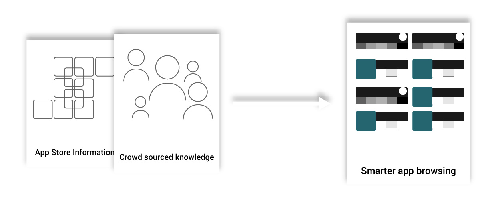

Superpowered app discovery
Pitch, launch and development of a web service
6 months from concept to acquisition
Product designer, co founder, pitcher
Pinapp was an app discovery and curation service created in 2013 and based on the thesis research from a friend and co founder who wanted to find out whether relating less popular apps with well known ones in a relevant way could improve their chances of being discovered by people.
The main goal of the service was to enable people to create app collections based on several criteria to then cross reference them and suggest related apps whose relationships were not immediately obvious.

The variety of different groups and the criteria of grouping varied a lot across different users, going from the obvious groups (such as "games" and "sports") to highly customized perspectives on app groups ("hipster box" or "apps that have nice design") and all possible variations in the middle. This encouraged users who were searching within the app to explore and discover interesting apps in a serendipitous and fun way.
The project was conceived and run independently by me and other 2 co founders over the course of 6 months until the team was acqui-hired by IN2 Search Interfaces in Bremen
The team of 3 was created for a business plan competition for students called CampusIdeen. The idea was to take the existing prototype used for the thesis and create a business model around it, as well as to improve the interface and user flows to make it more appealing to use by consumers and potential customers.
In a nutshell the idea was to encourage consumers to create many collections based on as many different terms as possible and share them with the broader network. This activity would allow us to create a large graph of relationships between apps and terms which we could later monetize with app creators and marketing agencies for their benefit.
After writing the proposal and submitting it for evaluation we decided that regardless of the outcome of the competition we would bring the product up to a consumer level standard of quality.
The prototype was generic looking and the terms used were very technical so we started working on branding and copywriting for the application to become more understandable. We also decided to refresh the homepage so consumers would grasp the concept more easily from the start. In terms of usability we focused on giving faster access to the pinning action (adding an app to a collection) and making the process of sharing apps easier and faster.
The competition arrived and we were awarded First Prize in the graduate student category after a smashing presentation and a well written and thought through business plan.
After re-launching as an award winning product, we struggled to find an audience with our main data suppliers (consumers). Unfortunately we discovered that it was mainly app creators which had a visibility problemfor their apps. Consumers seemed to be unaware of the situation and leaned on a handful of apps which they used commonly. Nevertheless we gathered some interest for the technology and the concept behind the service and ended up integrating it with the larger offer of our new employers.
As time passed by, the team was now consumed with the daily business of our new job and the focus on Pinapp and related services started to fade away. The last state of the product can still be found under this link